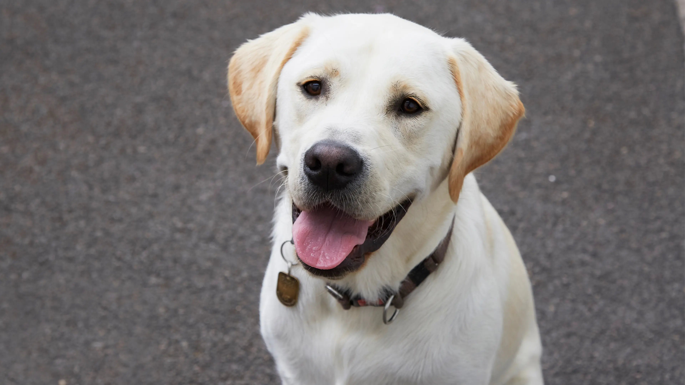
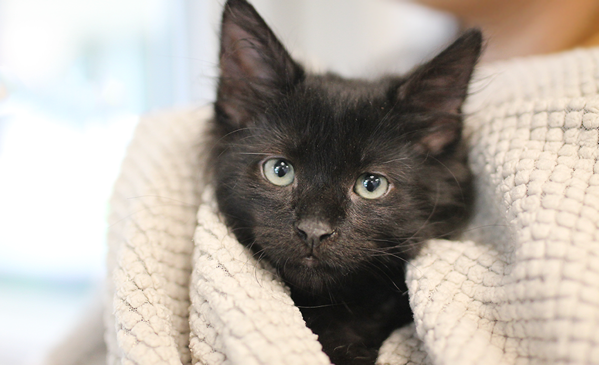
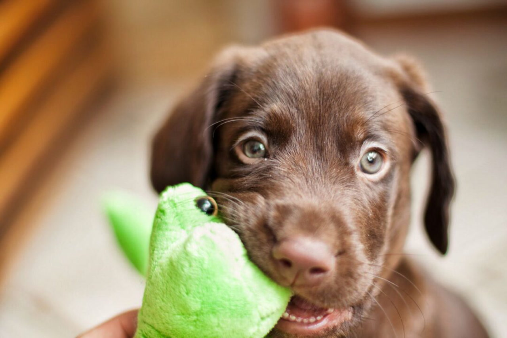
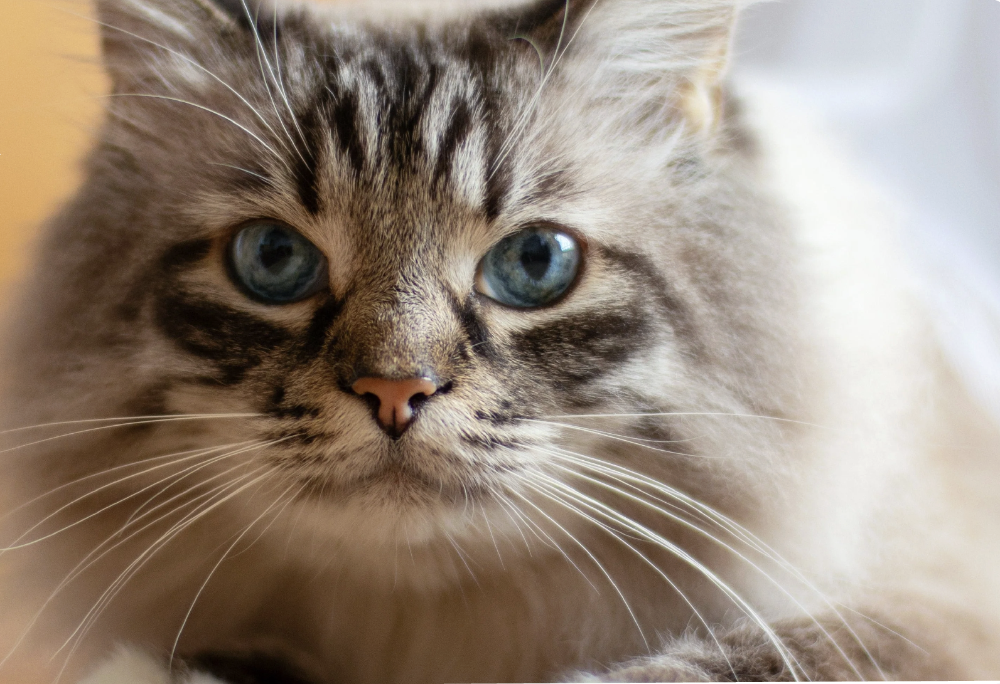

Available Dogs & Cats for Adoption

Sunny
Sunny is a friendly loving Golden Retriever male who is six years old, and he really loves treats, playtime, and going for walks!

Gizmo
Gizmo is a calm cuddly orange male cat who is four years old, and loves taking naps or receiving a lot of pets!

Bear
Bear is a energetic and sassy female Pomeranian puppy who loves to be spoiled by anyone and receiving a lot of love and attention from new people!

Moon
Moon is a black female baby kitten that is one year old, she is still getting used to be around humans but we are hoping for her to make new friends and find a new home!

Honey
Honey is a two year old brown male baby puppy, who is very playful and gets along with any human or dog. We recommend having another partner for Honey, since he loves having company at all times!

Whisper
Whisper is a female cat who is nine years old, and enjoys having alone time for herself, but also likes spending time with others! Her meows are very silent and soft, it's almost as if she's whispering!!